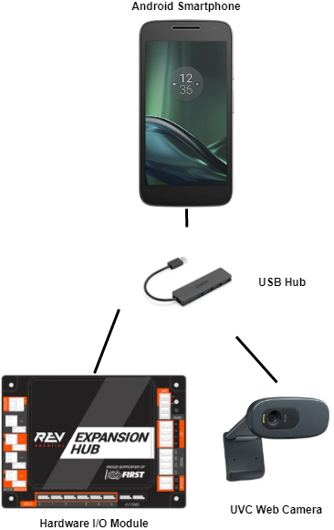
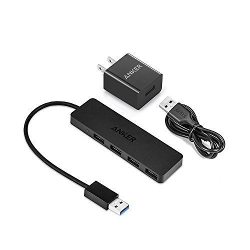
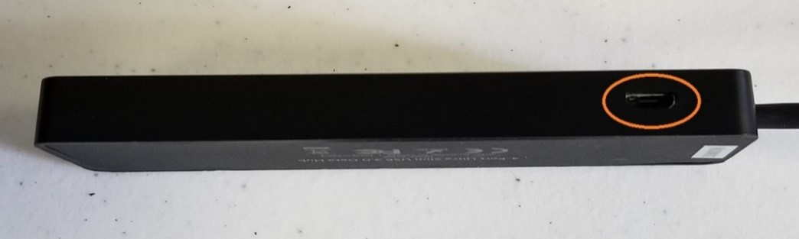

Configuring an External UVC Camera and a Powered USB Hub
Introduction
The Competition Manual allows the use of USB Video Class (UVC) compatible cameras for computer vision-related tasks. Teams who are using an Android smartphone as their ROBOT CONTROLLER have the option of using an externally connected camera instead of the built-in camera for computer vision tasks.
The advantage of using an external camera is that the camera can be mounted in a location that is convenient for vision-related tasks while the Android Robot Controller can be mounted where it is convenient for Robot Controller-related tasks.
The disadvantage of using an external camera is there is additional complexity introduced with the USB-connected camera. An external camera adds costs and weight to a robot and it needs to be wired correctly to run properly.
What type of External Camera can be Used?
The system supports UVC cameras. Theoretically, if a camera is UVC compliant, then it should work with the system. However, there are a couple of recommended web cameras that have been tested with the FIRST Tech Challenge software and have been calibrated to work accurately with this software:
Logitech HD Webcam C310
Logitech HD Pro Webcam C920
There are notes on other UVC webcams that teams can use.
Note that calibrating a UVC camera is an advanced task. Details on how to create a calibration file can be found in the comments of the teamwebcamcalibrations.xml file that is available as part of the ftc_app project folder (visit this link for an online copy of the file).
REV Expansion Hub and Phone
For teams using an Android phone and an Expansion Hub you are required to add a USB Hub to use a webcam.
USB Hub
Teams who would like to use an external camera will need a USB hub to connect their Android Robot Controller to the external camera and the REV Robotics Expansion Hub. To work properly, the USB hub should meet the following requirements:
Compatible with USB 2.0. Note: a USB 3.0 hub will still work, just not at the faster speed.
Supports a data transfer rate of 480Mbps.
Note that the Modern Robotics Core Power Distribution Module cannot be used for this task since its data transfer speed is not fast enough to work with the USB-connected webcam.
Also note that the Competition Manual permits the use of a powered USB hub to make this connection. If a team uses a powered USB hub, the power to operate the USB hub can only come from either of the following sources:
An externally connected commercially available off-the-shelf (COTS) USB Battery Pack in compliance with the Competition Manual.
The 5V DC Aux power port of a REV Robotics Expansion Hub (note that this requires advanced skills to implement).
FIRST has tested a few USB 2.0 powered hubs and recommends one from Anker. At the time this document was written, this hub was available from Anker.com.
The Anker 4-port powered hub is convenient because it has a Micro USB port that is used to connect the hub to a 5V power source (highlighted with orange circle in figure below).
This port allows a user to plug a standard USB type B Micro Cable into the hub, and then connect the other end of the cable (which has a USB Type A connector) into the output port of an external 5V USB battery pack. In the image below, the Anker 4 port hub is powered by a “limefuel” external 5V battery pack using a standard Type A to Type B USB Micro cable. Note the battery is highlighted by the yellow outline in the figure below.
The USB hub is drawing power from a power bank.
The USB hub is connected via it’s Type A connector and cable to an OTG cable which connects to the phone. The power bank is connected to the USB type B Micro port on the USB hub. The webcam is connected to one of the USB type A ports on the USB hub. A USB Type A to USB Mini B cable connects the USB hub to the REV Expansion Hub.
A USB hub can also draw power from the 5V auxiliary ports on the REV Robotics Expansion Hub. This configuration requires that the user have a special cable that on one end can be plugged into the 5V Auxiliary port and on the other end can be plugged into the power port of the USB hub.
The USB hub is connected to the 5V Auxiliary port.
Note that teams can create this special cable using one end of a servo extension cable (to plug into the 5V aux port) and one end of a Micro USB cable (to plug into the Anker hub’s power port). Creating this cable is an advanced task and should only be attempted by teams who have guidance from an adult mentor who has expertise in electronics and wiring! It is extremely important that the polarity is correct for this special cable. If the polarity is reversed it could damage your electronic equipment.
Sample Op Modes
There are sample Blocks and Java Op Modes that demonstrate how to use the external UVC web camera for VisionPortal operations. Before a team can use the external UVC camera, a configuration file must be configured with the external camera defined as one of the USB-connected devices.
Once a valid configuration file has been defined and activated, the programmer can use the external UVC camera, instead of the internal Android cameras, for vision-related tasks.